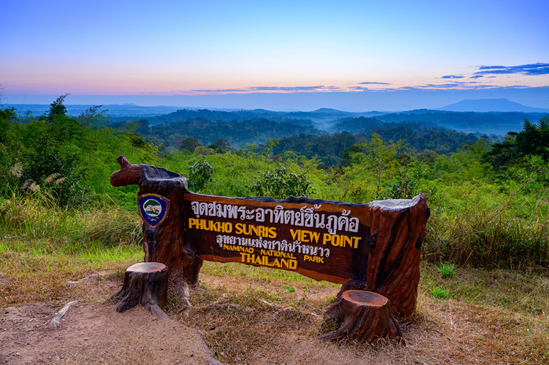
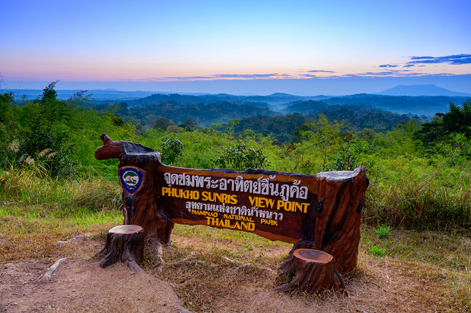

เป็นแหล่งท่องเที่ยวที่มีชื่อเสียงอีกแห่งหนึ่งของเพชรบูรณ์ ได้รับความนิยมในหมู่นักเดินทางที่ชอบการเดินป่าศึกษาธรรมชาติ เป็นภูเขาสูงสลับซับซ้อน เป็นแหล่งต้นน้ำที่สำคัญของแม่น้ำหลายสาย มีสัตว์ป่าชุกชุมรวมทั้งนกชนิดต่างๆ
 

🌟 เป็นแหล่งท่องเที่ยวที่มีชื่อเสียงอีกแห่งหนึ่งของเพชรบูรณ์
ได้รับความนิยมในหมู่นักเดินทางที่ชอบสัมผัสกับอากาศหนาวเย็นและเดินป่าศึกษาธรรมชาติ
มีสัตว์ป่า นกชนิดต่างๆตามเส้นทางเดินป่า ศึกษาธรรมชาติบนเขาสูงผ่านจุดชมวิวริมหน้าผา
มีน้ำตกที่สวยงามหลายแห่ง เช่น น้ำตกตาดพรานบา เป็นน้ำตกขนาดใหญ่มีน้ำไหลตลอดปี
ในเดือนธันวาคม -> มกราคมของทุกปี ผืนป่าบริเวณนี้จะผลัดใบเปลี่ยนสีซึ่งเป็นปรากฏการณ์ธรรมชาติที่สวยงาม